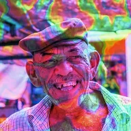

Regenboogglans

Bedekt de dekkende delen van de laag met een vloeiende regenboogglans, zoals olie op water of een zeepbel.
Instellingen
| Instelling | Type | Bereik | Standaard |
|---|---|---|---|
| Schaal | Getal | 0.01 tot 50 | 1 |
| Evolutie | Getal | -50 tot 50 | 0 |
| Kleurtoonverschuiving | Getal | -10 tot 10 | 0 |
| Verzadiging | Getal | 0% tot 100% | 60% |
| Alfa | Getal | 0% tot 100% | 80% |
| Overvloeimodus | Keuze | Normaal, Vermenigvuldigen, Bleken, Bedekken, Zacht licht, Fel licht, Optellen, Donkerder, Lichter, Verschil, Kleur tegenhouden, Kleur doordrukken | Normaal |
| Seed | Getal | 0 tot 5 | 0 |